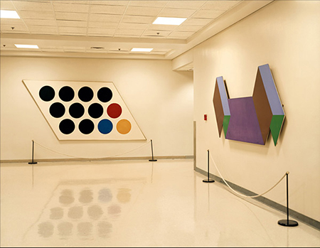

The Central Intelligence Agency, Art

CIA Original Headquarters Building
Langley, Virginia
The Fine Arts Commission of the CIA is responsible for acquiring art to display in the Agency's buildings. Among the Commission's curated art are two pieces (pictured) by Thomas Downing, on long-term loan from the Vincent Melzac Collection. Downing was a member of the Washington Color School, a group of post-World War II painters whose influence helped to establish the city as a center for arts and culture.
Chromogenic print, 37-1/4 x 44-1/2 inches framed (94.6 x 113 cm), Edition of 7
© Taryn Simon